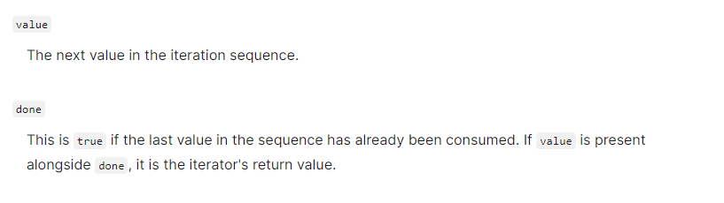

In JavaScript an
iterator
is an object which defines a sequence and potentially a return value upon
its termination.
Specifically, an iterator is any object which implements the Iterator
protocol by having a next() method that returns an object with two
properties:
